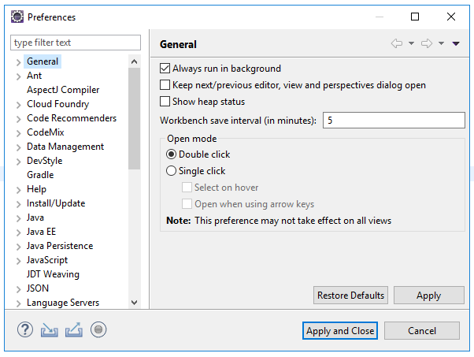

В главном меню Eclipse выберите пункт Window → Preferences:

Откроется главное окно настроек IDE Eclipse:
После этого нашей главной задачей становится найти в этих настройках раздел, который отвечает за форматирование исходного кода в редакторе Eclipse. Для этого, мы переходим к следующему шагу.